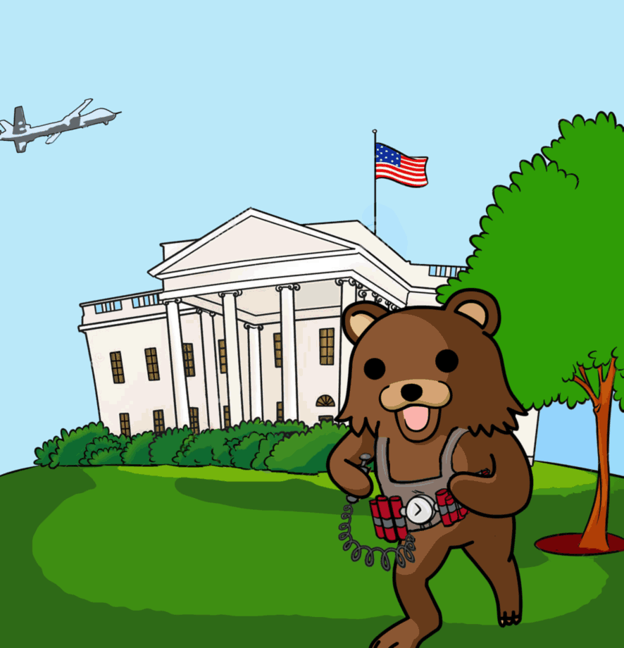
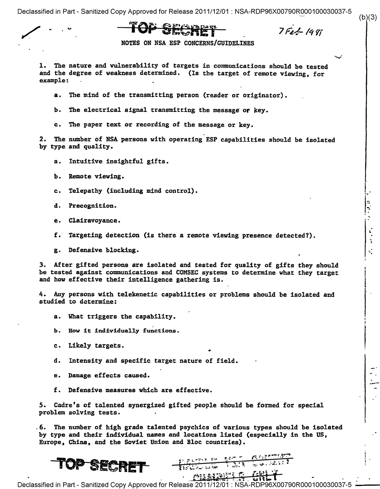
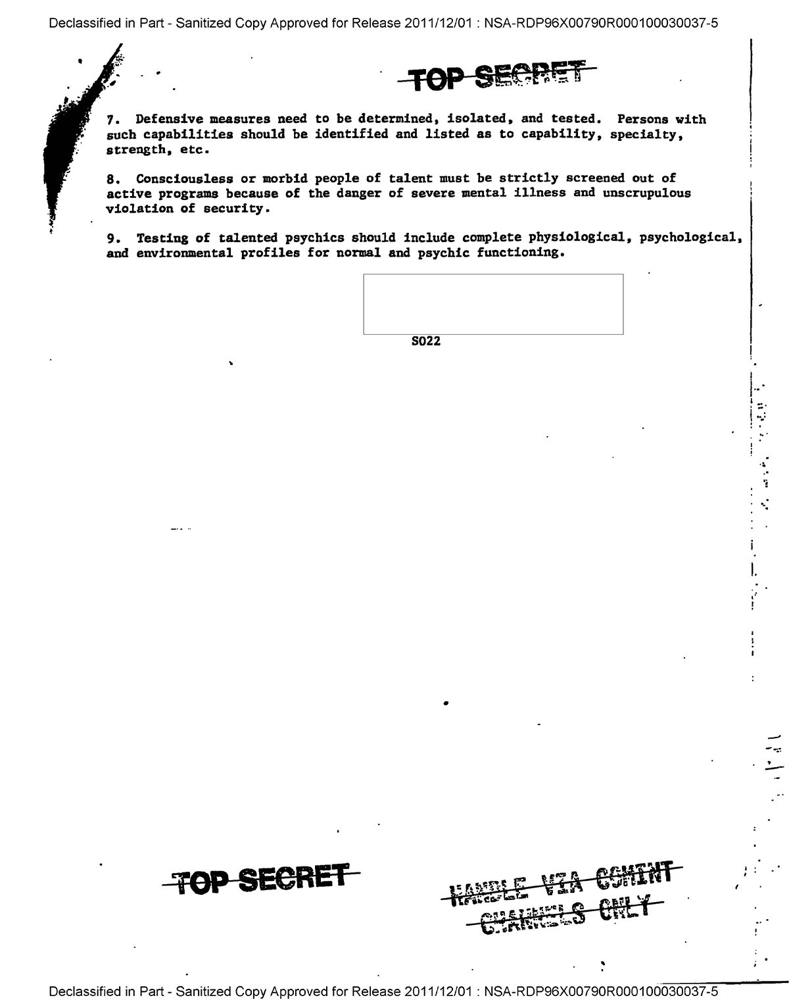

![Washington, 1975. It was a long hot summer of discontent in the White House. The unelected president, Gerald Ford--who'd taken office after the resignation of Richard Nixon--was raging. Every day seemed to bring fresh horrors from the Congressional committees investigating America's intelligence agencies. Assassination plots, terrorist acts, coups, secret armies, subversion of allied governments, Mafia connections, torture, press manipulation, domestic surveillance--the revelations were endless, a bottomless pit of corruption and criminality being dredged up by the House and Senate panels.
Where was their sense of duty, the code of omerta that had for so long protected those who toil in the shadows, who do the dirty work to keep America fat and safe and happy? What right did these mere senators and representatives have to tell the people--the big dumb dazed mobocracy out there--the truth about what their leaders were doing in their name? They were like children, they could never understand the higher wisdom that guided the elites. Oh, it was a far cry from the old days, back on the Warren Commission, when a good soldier like Jerry Ford knew just what to do: you accepted whatever the agencies told you, and you steered investigations away from anything that might break the code and pierce the shadows.
So Ford seethed. What the hell is wrong over there at the CIA, he complained to his chief of staff, Donald Rumsfeld. Why couldn't Bill Colby, the director, keep a lid on things? Colby had even come clean about Operation Phoenix, for Christ's sake. More than 20,000 Vietnamese murdered in the CIA-run program--did Joe Lunchbucket really need to know about that?
What next? Are they going to find about Reinhard Gehlen, too: the Nazi spy who joined the CIA and recruited thousands of Hitler's best and brightest--including Klaus Barbie and a cadre of SS veterans--to work for the Agency? Sure, it would look bad, but come on: Gehlen was championed by Allen Dulles himself--the founding father of the CIA, the hotshot lawyer who kept Prescott Bush's name out of the papers when Pres was caught trading with the Nazis in 1942. Dulles and those Yale boys knew what was best--but try explaining that to some poor schmuck whose father got killed at Normandy or Auschwitz or some other godforsaken hole, eh?
As it happened, the 'Gehlen Organization' stayed secret for another 26 years. But in July 1975, Ford had still more worries. A top White House aide, Dick Cheney, sent a memo to Rumsfeld, warning him about an upcoming lawsuit. The family of Frank Olson had found out--through the Congressional investigations--that he had been secretly drugged by the CIA not long before he took that fall from the hotel window. Now they were suing the government for damages.
The lawsuit could be bad business, Cheney told Rumsfeld. 'It might be necessary to disclose highly classified national security information' during the trial. That would include the truth about Olson: the CIA connection, biochemical weapons, the mind-control and torture experiments based on Nazi death-camp 'research,' and the Agency fingerprints all over Olson's last days in New York City. The case might even reveal the existence of special 'CIA Assassination Manuals,' like the one issued in the year of Olson's death, 1953, stating: 'The most efficient accident, in simple assassinations, is a fall of 75 feet or more onto a hard surface. Elevator shafts, stairwells, unscreened windows and bridges will serve. [In some cases], it will usually be necessary to stun or drug the subject before dropping him.'
Such revelations had to be avoided at all costs. Rumsfeld and Cheney urged Ford to make a settlement before the trial started. To avoid the courts entirely, they would arrange a private bill in Congress to give the family some cash. The deal would be sweetened by private audiences with both Ford and Colby, apologizing for the CIA's past 'mistakes,' and promising 'full disclosure' of all the facts, so the family could at last find peace.
And so it was done. And it was all a lie--beyond the bare fact, already unearthed by Congress, that Olson had been drugged by the CIA. The family got 17 minutes in the Oval Office with Ford--who apologized for the government's indirect involvement in Olson's death--that LSD test gone awry. Rogue elements, you know; unauthorized activity. Shouldn't have happened; never happen again. This was followed by a meeting with Colby, who handed over a thick file: the CIA's 'complete' investigation of the Olson affair--so complete that it forgot to mention that Olson was a CIA official. Or that his colleagues considered him a 'security risk.' Little things like that.
Thus began the second cover-up. It took Eric Olson another 27 years to piece together the story, from obscure archives, through lucky accidents, and strained meetings with old CIA hands, who let fall dribs and drabs of the truth. He was even forced to exhume his father's body: a gruesome process that revealed the original 1953 post-mortem had also been a lie.
That examination had simply confirmed the cover story: poor sap had flung himself through the glass and splattered on the sidewalk below. No autopsy needed. Close the coffin--the body is too busted-up for the family to see--and close the case. But the second examination, decades later, carried out by forensic experts, revealed the truth. There were no marks on the well-preserved cadaver consistent with a self-propelled flight through the window: no cuts on the face or arms. There was, however, a cranial injury entirely consistent with a blow to the head--delivered before the fall.
Earlier this year, the Cheney-Rumsfeld memos came to light, confirming that the Olsons had been deliberately lied to in 1975. It helped fill in some of the remaining pieces of the scattered jigsaw puzzle that was his father's death--and had become Eric's life. And although the centerpiece of the puzzle--the fateful moments in that hotel room, before Frank Olson went through the glass--remains forever absent, the picture was as complete as it would ever be, Eric decided. And so he buried his father, again, in the dark Maryland earth.
But Ford, Rumsfeld and Cheney had kept the faith back in those dangerous days of 1975. They had honored omerta. Colby was not so lucky. For his sins--his 'weakness' in allowing a few spears of sunlight into the shadows--he was summarily dismissed a few months later. He was replaced by a man who also lived by the code, who would keep the precious Agency--and all its Gehlens, its torturers, its dopers, its shooters--safe from the mobocracy, the ignorant rabble with their pathetic fairy-tale notions about democracy, justice, law and honor. He would guard the shadow world so well that one day the headquarters of the CIA would proudly bear his name:
George Herbert Walker Bush.](world-cup-usa-womens-soccer-champtions.png)
Opening in the Second Degree WM gavels once, repeated by SW and JW. WM: Brethren, assist me to open the Lodge in the Second Degree. All rise, if not already standing. WM: Brother Junior Warden, what is the first care of every Fellow Craft Freemason? JW: To see that the Lodge is properly tyled. WM: Direct that duty to be done. JW: Brother Inner Guard, see that the Lodge is properly tyled. IG goes to door, gives EA-knocks and returns to position in front of his chair. Tyler responds with same knocks. IG takes Step and gives EA Sign: Brother Junior Warden, the Lodge is properly tyled. Cuts Sign. JW gives EA-knocks, takes Step and gives EA-Sign: Worshipful Master, the Lodge is properly tyled. Cuts Sign. WM: Brother Senior Warden, the next care? SW: To see that the Brethren appear to order as Masons. WM: To order, Brethren, in the First Degree. All take Step, with EA-Sign. WM: Brother Junior Warden, are you a Fellow Craft Freemason? JW: I am, Worshipful Master, try me and prove me. WM: By what instrument in architecture will you be proved? JW: The Square. WM: What is a Square? JW: An angle of 90 Degrees, or the fourth part of a Circle. WM: Being yourself acquainted with the proper method, you will prove the Brethren Craftsmen, and demonstrate that proof to me by copying their example. JW: Brethren, it is the Worshipful Master's command that you prove yourselves Craftsmen. All, except WM and JW cut EA-Sign, take Step with FC-Sign. JW having assured himself that all have proved themselves: Worshipful Master, the Brethren themselves Craftsmen, and in obedience to your command I thus copy their example. Cuts EA-Sign, takes Step with FC-Sign. WM: Brother Junior Warden, I acknowledge the correctness of the Sign. Cuts EA-Sign, takes Step with FC-Sign. WM: Before we open the Lodge in the Second Degree, let us supplicate the Grand Geometrician of the Universe, that the rays of Heaven may shed their influence to enlighten us in the paths of virtue and science. Immediate Past master: So mote it be. WM: Brethren, in the name of the Grand Geometrician of the Universe, I declare the Lodge duly open on the Square for the instruction and improvement of Craftsmen. WM gives FC-knocks quietly, repeated by SW and JW, both quietly. IG gives FC-knocks by right hand on left sleeve Immediate Past Master exposes one point of Compass. WM sits when this has been completed. All sit. WM requests FCs other than Candidate to withdraw and indicates with appropriate words that the next business is to raise Brother …. SD goes to Candidate, takes him by right hand, leads him to position North of SW’s pedestal, both facing East, and releases hand. WM: Brethren, Brother … is this evening a Candidate to be raised to the Third Degree, but it is first requisite that he give proofs of proficiency in the Second. I shall therefore proceed to put the necessary questions. How were you prepared to be passed to the Second Degree? SD must be prepared, if necessary, to prompt Candidate. Candidate: In a manner somewhat similar to the former, save that in this Degree I was not hoodwinked, my left arm, breast and knee were made bare and my left heel was slipshod. WM: On what were you admitted? Candidate: The square. WM: What is a square? Candidate: An angle of 90 degrees or the or the fourth part of a circle. WM: What are the peculiar objects of research in this Degree? Candidate: The hidden mysteries of Nature and Science. WM: As it is the hope of reward that sweetens labour, where did our ancient brethren go to receive their wages? Candidate: Into the middle chamber of King Solomon's Temple. WM: How did they receive them? Candidate: Without scruple or diffidence. WM: Why in this peculiar manner? Candidate: Without scruple, well knowing they were justly entitled to them, and without diffidence, from the great reliance they placed on the integrity of their employers in those days. WM: What were the names of the two great Pillars which were placed at the porchway or entrance of King Solomon's Temple? Candidate: That on the left was called Boaz, and that on the right Jachin. WM: What are their separate and conjoint significations? Candidate: The former denotes in strength, the latter, to establish; and when conjoined, stability, for God said, ‘In strength I will establish this Mine house to stand firm for ever.’ WM: These are the usual questions; I will put others if any Brother wishes me to do so. SD conducts Candidate by right hand direct to North-side of WM’s pedestal and a convenient distance from it, both facing South and releases hand. WM: Do you pledge your honour as a man and your fidelity as a Craftsman that you will steadily persevere through the ceremony of being raised to the sublime Degree of a Master Mason? SD prompting Candidate aloud: I do. WM: Do you likewise pledge yourself that you will conceal what I shall now impart to you with the same strict caution as the other secrets in Masonry? SD prompting Candidate aloud: I do. WM: Then I will entrust you with a test of merit, which is a pass grip and pass word leading to the Degree to which you seek to be admitted. Rises, faces Candidate, and takes the latter's right hand in his own right hand and holds it. The pass grip is given by a distinct pressure of the thumb between the second and third joints of the hand. The pass grip demands a pass word, which is Tubal Cain. Tubal Cain was the first artificer in metals. The import of the word is worldly possessions. You must be particularly careful to remember this word as without it you cannot gain access into a Lodge in a superior degree. Pass, Tubal Cain. Restores Candidate’s right hand to left hand of SD and sits. SD guiding Candidate, makes a clockwise wheel and conducts him direct to North of SW's pedestal. Here he wheels Candidate clockwise so as to face East and releases hand. SD to Candidate aloud: Salute the Worshipful Master as a Fellow Craft first as an Entered Apprentice. SD takes Candidate by right hand, makes anticlockwise wheel with Candidate and conducts him to door. IG goes to door in front of SD and opens it, closing and locking it again when Candidate has gone out. IG and SD return to seats. The Raising Opening in the Third Degree WM gavels once, repeated by SW and JW. WM: Brethren, assist me to open the Lodge in the Third Degree. All rise. WM: Brother Junior Warden, what is the first we of every Master Mason? JW: To see that the Lodge is properly tyled. WM: Direct that duty to be done. JW: Brother Inner Guard, see that the Lodge is properly tyled. IG goes to door, gives FC-knocks and returns to position in front of his chair. Tyler responds with same knocks. IG takes Step and give FC-Sign: Brother Junior Warden, the Lodge is properly tyled. Cuts Sign. JW gives FC-knocks, takes Step and gives FC-Sign: Worshipful Master, the Lodge is properly tyled. Cuts Sign. WM: Brother Senior Warden, the next care? SW: To see that the Brethren appear to order as Craftsmen. WM: To order, Brethren. Second Degree. All take Step with FC-Sign. WM: Brother Junior Warden, are you a Master Mason? JW: I am, Worshipful Master, try me and prove me. WM: By what instruments in Architecture will you be proved? JW: The Square and Compass. WM: Being yourself acquainted with the proper method, you will prove the Brethren Master Masons by Signs and demonstrate that proof to me by copying their example. JW: Brethren, it is the Worshipful Master’s command that you prove yourselves Master Masons by Signs. All, except WM and JW take Step and give Signs. JW: Worshipful Master, the Brethren have proved themselves Master Masons by Signs, and in obedience to your command I thus copy their example. Takes Step and gives the three Signs. WM: Brother Junior Warden, I acknowledge the correctness of the Signs. Whence come you? JW: The East. WM: Brother Senior Warden, whither directing your course? SW: The West. WM: What inducement have you to leave the East and go to the West? JW: To seek for that which was lost, which, by your instruction and our own industry, we hope to find. WM: What is that which was lost? SW: The genuine secrets of a Master Mason. WM: How came they lost? JW: By the untimely dead of our Master, Hiram Abiff. WM: Where do you hope to find them? SW: With the Centre. WM: What is a Centre? JW: A point within a circle, from which every part of the circumference is equidistant. WM: Why with the Centre? SW: That being a point from which a Master Mason cannot err. WM: We will assist you to repair that loss and may Heaven aid our united endeavours. Immediate Past Master: So mote it be. WM: Brethren, in the name of the Most High, I declare the Lodge duly open, on the Center for the purposes of Freemasonry in the Third Degree. WM gives MM-knocks quietly, repeated by SW and JW. Tracing Board is attended to when JW has given knocks. IG gives MM-knocks by right hand on left sleeve, standing in his place.. Immediate Past Master, meanwhile, exposes both points of Compass. Deacons lay down and open sheet, on which is drawn an 'open grave, surrounded by skulls and cross-bones. Tyler prepares Candidate including FC-badge and Ceremony proceeds: Tyler gives FC-knocks on door. This informs Lodge that a Candidate for Raising is at the door of the Lodge. IG rises in front of his chair, takes Step and gives Penal Sign: Brother Junior Warden, there is a report. JW, takes Step and gives Penal Sign: Worshipful Master, there is a report. WM: Brother Junior Warden, inquire who wants admission. JW cuts Sign and recovers, and sits: Brother Inner Guard, see who wants admission. IG cuts Sign and recovers, goes to door, opens it, checks that Candidate is properly prepared, and remains on threshold with hand on door handle: Whom have you there? Tyler: Brother …, who has been regularly initiated into Freemasonry, passed to the Degree of a Fellow Craft, and has made such further progress as he hopes will entitle him to be raised to the sublime Degree of a Master Mason, for which ceremony he is properly prepared. IG: How does he hope to obtain the privileges of the Third Degree? Tyler: By the help of God, the united aid of the Square and Compass, and the benefit of a pass word. IG: Is he in possession of the pass word? Tyler: Will you prove him? IG receives pass grip and pass word from Candidate. IG: Halt, while I report to the Worshipful Master. Closes and locks door, returns to position in front of his chair, takes Step and gives Penal Sign which he holds. IG: Worshipful Master, Brother …, who has been regularly initiated into Freemasonry, passed to the degree of a Fellow Craft, and has made such further progress as he hopes will entitle him to be raised to the sublime Degree of a Master Mason, for which ceremony he is properly prepared. WM: How does he hope to obtain the privileges of the Third Degree? IG: By the help of God, the united aid of the Square and Compass, and the benefit of a pass word. WM: We acknowledge the powerful aid by which he seeks admission; do you, Brother Inner Guard, vouch that he is in possession of the pass word? IG: I do, Worshipful Master. WM: Then let him be admitted in due form. IG cuts Sign and recovers. WM: Brother Deacons. JD places kneeling stool in position. IG takes Compass and goes to door followed by JD and SD, SD on left. It is at this point that all lights except that of the WM are extinguished. IG opens door, retaining hold on it as before, applies extended Compass to both breasts of Candidate and then raises Compass above his head to show that he has so applied them. SD with left hand takes Candidate by right hand, leads him to kneeling stool, two short paces from it and releases hand. All three stand facing East. IG after Candidate is admitted closes and locks door and resumes his seat SD: Advance as a Fellow Craft, first as an Entered Apprentice. WM: Let the Candidate kneel while the blessing of Heaven is invoked on what we are about to do. SD ensures Candidate kneels and gives Sign of Reverence. WM gavels once, repeated by SW and JW. Deacons hold wands in left hand, cross them over head of Candidate and give Sign of Reverence. All stand with Sign of Reverence. Prayer WM: Almighty and Eternal God, Architect and Ruler of the Universe, at Whose creative fiat all things first were made, we, the frail creatures of Thy providence, humbly implore Thee to pour down this convocation assembled in Thy Holy Name the continual dew of Thy blessing. Especially, we beseech Thee to impart Thy grace to this Thy servant, who offers himself a Candidate to partake with us the mysterious Secrets of a Master Mason. Endue him with such fortitude that in the hour of trial he fail not, but that, passing safely under Thy protection through the valley of the shadow of death, he may finally rise from the tomb of transgression, to shine as the stars for ever and ever. Immediate Past Master: So mote it be. All drop Sign of Reverence. Deacons uncross wards and hold them again in right hand. WM: Let the Candidate rise. WM sits. All, except Deacons and Candidate sit. JD draws kneeling stool aside to his left out of way of SD and Candidate. SD takes Candidate’s right hand firmly, instructs him in a whisper to step off with left foot and leads Candidate up North towards Eastern part of Lodge. JD follows close behind Candidate and continues to do so for complete perambulation. IG replaces kneeling stool in normal position. SD leads Candidate to North-East corner where they square Lodge; SD instructs Candidate to step off with left foot and proceeds with him to point in front of WM’s pedestal, halts there and releases hand. SD: Salute the Worshipful Master as a Mason. SD takes Candidate by right hand, instructs him to step off with left foot and leads him via South East corner which is squared to East side of JW’s pedestal where they stand parallel to pedestal at a convenient distance from it. Releases hand. JD stands as nearly behind Candidate as is possible. SD: Advance to the Junior Warden as such, showing the Sign and communicating the Token and Word. JW: Have you anything to communicate? SD prompting Candidate aloud: I have. JW rises, faces Candidate with Step and offers hand. SD places right hand of Candidate in that of JW and adjusts EA-grip from above. JW gives grip after SD has adjusted Candidate’s right thumb and retains grip throughout the whole of the colloquy: What is this? SD prompting Candidate aloud: The Grip or Token of an Entered Apprentice Freemason. JW: What does it demand? SD prompting Candidate aloud: A word. JW: Give me that word freely and at length. SD prompting Candidate aloud: Boaz. JW: Pass, Boaz. Replaces Candidate’s right hand in left hand of SD and sits. SD leads Candidate on to floor of Lodge, instructs him to step off with left foot and leads him via South West corner which is squared to a point in front of SW’s pedestal halts and releases hand. SD: Salute the Senior Warden as a Mason. SD takes Candidate’s right hand, instructs him to step off with left foot. leads him to North West corner of Lodge which is squared and proceeds with Candidate towards East end of Lodge to perambulate a second time. JD continues to follow close behind Candidate on this perambulation. SD leads Candidate to North East corner of Lodge which is squared and on to point in front of WM’s pedestal halts there and releases hand. SD: Salute the Worshipful Master as a Fellow Craft. SD takes Candidate’s right hand, instructs him to step off with left foot and leads him via South East corner which is squared to a point in front of JW’s pedestal, halts, and releases hand. SD: Salute the Junior Warden as a Fellow Craft. SD takes Candidate’s right hand, instructs him to step off with left foot and leads him via South West corner which is squared to South side of SW’s pedestal where they stand parallel to pedestal and a convenient distance from it. Releases hand. JD stands as nearly behind Candidate as possible. SD: Advance to the Senior Warden as such, showing the Sign and communicating the Token and Word of that Degree. SW: Have you anything to communicate? SD prompting Candidate aloud: I have. SW rises, faces Candidate with Step and offers hand. SD places right hand of Candidate in that of SW and adjusts FC-grip from above. SW gives grip after SD has adjusted Candidate’s right thumb and retains grip throughout the whole of the colloquy. SW: What is this? SD prompting Candidate aloud: The Grip or Token of a Fellow Craft Freemason. SW: What does it demand? SD prompting Candidate aloud: A word. SW: Give me that word, freely and at length. SD prompting Candidate aloud: Jachin. SW: Pass, Jachin. SD takes Candidate’s right hand and leads him on to floor of Lodge, instructs him to step off with left foot and leads him to North of SW’s pedestal, wheels clockwise so that both face WM and releases hand. JD follows Candidate till SD and Candidate face WM, then passes behind them and stands on left of Candidate so that all three are in line facing East. WM gavels once, repeated by SW and JW. WM: The Brethren will take notice that Brother …, who has been regularly initiated into Freemasonry and passed so the Degree of a Fellow Craft, is about to pass is view before them, to show that he is the Candidate properly prepared to he raised to the sublime Degree of a Master Mason. SD takes Candidate’s right hand, instructs him to step off with left foot and leads him up North side of Lodge to perambulate a third time. JD falls in behind Candidate as on previous perambulations and again continues to follow close behind Candidate. SD leads Candidate to North East corner which is squared and proceeds to point in front of WM’s pedestal halts and releases hand. SD: Salute the Worshipful Master as a Fellow Craft.. SD takes Candidate’s right hand, continues perambulation, squaring South East corner, halts in front of JW’s pedestal and releases hand. SD: Salute the Junior Warden as a Fellow Craft. SD takes Candidate’s right hand instructs him to step off with left foot and continues perambulation, squaring South West corner and leads Candidate to South of SW’s pedestal standing parallel to pedestal and a convenient distance from it. Releases hand. SD: Advance to the Senior Warden as such, showing the Sign and communicating pass grip and pass word you received from the Worshipful Master previously to leaving the Lodge. SW: Have you anything to communicate? SD prompting Candidate aloud: I have. SW rises, faces Candidate and offers hand. SD places Candidate’s right hand in that of SW and, with left hand adjusts pass grip from above. SW gives pass grip after SD has adjusted Candidate’s right thumb and retains pass grip throughout colloquy. SW: What is this? SD prompting Candidate aloud: The pass grip leading from the Second to the Third Degree. SW: What does this pass grip demand? SD prompting Candidate aloud: A pass word. SW: Give me that pass word. SD prompting Candidate aloud: Tubal Cain. SW: What was Tubal Cain? SD prompting Candidate aloud: The first artificer in metals. SW: The import of the word? SD prompting Candidate aloud: Worldly possessions. SW: Pass, Tubal Cain. SD takes Candidate’s right hand and leads him on to floor of Lodge, instructs him to step off with left foot and leads him to North side of SW’s pedestal. Here he makes an anti-clockwise wheel and places Candidate’s right hand in left hand of SW; he lines up on left of Candidate and ensures that both are in line, facing East. JD follows Candidate and as SD and Candidate wheel continues on and takes up position on left of SD so that all three are in line, facing East. SW holding up Candidate’s right hand, Step and Master Mason Penal Sign: Worshipful Master, I present to you Brother …, a Candidate properly prepared to be raised to the Third Degree. WM: Brother Senior Warden, you will direct the Deacons to instruct the Candidate to advance to the East by the proper steps. SW cuts Sign and recovers, replaces Candidate's right hand in left hand of SD and sits. SD takes up a position on right of Candidate, ensures that both face East and releases hand. JD remains in position, now on left of Candidate. SW: Brother Deacons, it is the Worshipful Master’s command that you instruct the Candidate to advance to the East by the proper steps. SD takes Candidate's right hand, instructs him to step off with left foot and leads him up North side of Lodge, halts and turns with him to face South. JD follows close behind Candidate and when SD halts passes behind Candidate and turns South so that all three are in line. SD leaves Candidate and goes, by passing outside West end of sheet, to far side of sheet from Candidate, turns and halts facing him. SD: The method of advancing from West toast in this degree is by seven steps, the first three as if stepping over a grave. For your information I will go through them, and you will afterwards copy me. SD goes to head or West end of grave and stands facing East, feet formed in a square, heel to heel, left foot pointing East, right foot pointing South. Commencing with left foot he takes a Step across the grave in a North-East direction, the left foot being placed at the North side of the grave about one-third of the latter’s length and pointing North. The Step is completed by bringing the right foot up to the left foot heel to heel in the form of a square and with the right foot pointing East. Commencing with the right foot, he takes a second Step across the grave in a South-East direction, the right foot being placed at the South side of the grave about two-thirds of the latter’s length and pointing South. This Step is completed by bringing the left foot up to the right foot heel to heel in the form of a square, the left foot pointing East. Commencing with the left foot he takes a third Step to the foot on Eastern end of the grave, the left foot pointing East. The Step is completed by bringing up the right foot to the left, heel to heel in the form of a square and the right foot pointing South. Commencing with the left foot he takes four Steps in a direction due East, finishing in front of WM’s pedestal with the feet heel to heel in the form of a square, left foot pointing North East and right foot pointing South East. SD then returns to Candidate, going via the South and West of the sheet, takes him by right hand, places him in position at West end of grave and keeping ahead of him, on South side of grave instructs him in a whisper how to take Steps, pointing out position for Candidate’s feet. He does not retain handclasp. When Candidate reaches Eastern end of grave at third Step, SD walks beside him for last four Steps and remains on his right in front of WM’s pedestal. JD remains stationary while Candidate is taking first three Steps and then moves so as to arrive at WM’s pedestal simultaneously with SD and Candidate and takes position on left of Candidate so that all three are in line facing East. WM: It is but fair to inform you that a most serious trial of your fortitude and fidelity and a more solemn Obligation await you. Are you prepared to meet them as you ought? Candidate: I am. WM: Then you will kneel on both knees, place bare hands on the Volume of Sacred Law. WM gavels once, repeated by SW and JW. All rise with Step and Master Mason Penal Sign. Deacons hold wands in left hands, cross them over head of Candidate, take Step and give Master Mason Penal Sign. WM: Repeat your name at length, and say after me: I, …, in the presence of the Most High, and of this worthy and worshipful Lodge of Master Masons, duly constituted, regularly assembled and properly dedicated, of my own free will and accord, do hereby and hereon most solemnly promise and swear that I will always hele, conceal, and never reveal any or either of the secrets or mysteries of or belonging to the Degree of a Master Mason to anyone in the world, unless it be to him or them to whom the same may justly and lawfully belong, and not even to him or them until after due trial, strict examination, or full conviction that he or they are worthy of that confidence, or in the body of a Master Mason’s Lodge duly opened on the Centre. I further solemnly pledge myself to adhere to the principles of the Square and Compass, answer and obey all lawful Signs, and summonses sent to me from a Master Mason’s Lodge, if within the length of my cable tow, and plead no excuse, except sickness or the pressing emergencies of my own public or private avocations. I further solemnly engage myself to maintain and uphold the Five Points of Fellowship in act as well as in word: that my hand, given to a Master Mason, shall be a sure pledge of brotherhood; that my feet shall travel through dangers and difficulties to unite with his in forming a column of mutual defense and support; that the posture of my daily supplications shall remind me of his wants, and dispose my heart to succour his weakness and relieve his necessities, so far as may-fairly be done without detriment to myself or connections; that my breast shall be the sacred repository of his secrets when entrusted to my care - murder, treason, felony, and all other offences contrary to the laws of God and the ordinances of the realm being at all times most especially excepted. And finally, that I will maintain a Master Mason’s honour and carefully preserve it as my own: I will not injure him myself or knowingly suffer it to be done by others if in my power to prevent it, but, on the contrary, will boldly repel the slanderer of his good name, and most strictly respect the chastity of those nearest and dearest to him, in the persons of his wife, his sister and his child. All these points I solemnly swear to observe, without. evasion, equivocation or mental reservation of any kind. So help me the Most High, and keep me steadfast in this my solemn Obligation of a Master Mason. All cut Penal Sign, recover and drop hands. Deacons lower wands to right hand WM: As a pledge of your fidelity, and to render this binding as a Solemn Obligation for so long as you shall live, you will seal it with your lips thrice on the Volume of Sacred Law. Let me once more call your attention to the position of the Square and Compass. When you were made an Entered Apprentice both points were hid; in the Second Degree one was disclosed; in this the whole is exhibited implying that you are now at liberty to work with both those points in order to render the circle of your Masonic duties complete. WM takes Candidate’s right hand from Volume of Sacred Law with his right hand: Rise newly obligated Master Mason. WM sits. All, except Deacons and Candidate, sit. Deacons, assisting Candidate, step backwards with him till standing at foot of grave and there halt in line still facing East. The Exhortation WM: Having entered upon the Solemn Obligation of a Master Mason, you are now entitled to demand that last and greatest trial by which alone you Candidate be admitted to a participation of the secrets of this Degree; but it is first my duty to call your attention to a retrospect of those degrees in Freemasonry through which you have already passed, that you may the better be enabled to distinguish and appreciate the connection of our whole system, and the relative dependency of its several parts. Your admission among Masons in a state of helpless indigence was an emblematical representation of the entrance of all men on this, their mortal existence. It inculcated the useful lessons of natural equality and mutual dependence; it instructed you in the active principles of universal beneficence and charity, to seek the solace of your own distress by extending relief and consolation to your fellow-creatures in the hour of their affliction. Above all, it taught you to bend with humility and resignation to the will of the Great Architect of the Universe; to dedicate your heart, thus purified from every baneful and malignant passion, fitted only for the reception of truth and wisdom, to His glory and the welfare of your fellow-mortals. Proceeding onwards, still guiding your progress by the principles of moral truth, you were led in the Second Degree to contemplate the intellectual faculty and to trace it from its development, through the paths of heavenly science, even to the throne of God Himself. The secrets of Nature and the principles of intellectual truth were then unveiled to your view. To your mind, thus modeled by virtue and science, Nature, however, presents one great and useful lesson more. She prepares you, by contemplation, for the closing hour of existence; and when by means of that contemplation she has conducted you through the intricate windings of this mortal life, she finally instructs you how to die. Such, my Brother, are the peculiar objects of the Third Degree in Freemasonry: They invite you to reflect on this awful subject; and teach you to feel that, to the just and virtuous man, death has no terrors equal to the stain of falsehood and dishonour. Of this great truth the annals of Masonry afford a glorious example in the unshaken fidelity and noble death of our Master Hiram Abiff, who was slain just before the completion of King Solomon's Temple, at the construction of which he was, as no doubt you are well aware, the principal Architect. The manner of his death was as follows. Brother Wardens. Wardens leave their seats; SW by North side taking Level with him, JW by West side taking Plumb Rule with him. SW proceeds eastwards straight up the Lodge; JW waits until SW is level with him and then both advance abreast until they arrive behind the Deacons. SW touches JD’s right shoulder and JW, simultaneously, touches SD's left shoulder. Deacons step one pace outwards. Wardens come up in line between Deacons and the Candidate, SW on left and JW on right of Candidate. This line of five is held momentarily from North to South, facing East. Deacons then turn outwards and return to their seats. JW directs Candidate to cross right foot over left. Wardens hold Candidate securely by his hands so that they have full control over him and he does not at any time lose his balance. WM: Fifteen Fellow Crafts, of that superior class appointed to preside over the rest, finding that the work was nearly completed and that they were not in possession of the secrets of the Third Degree, conspired to obtain them by any means, even to have recourse to violence. At the moment, however, of carrying their conspiracy into execution, twelve of the fifteen recanted; but three, of a more determined and atrocious character than the rest, persisted in their impious design, in the prosecution of which they planted themselves respectively at the East, North, and South entrances of the Temple, whither our Master had retired to pay his adoration to the Most High, as was his wonted custom at the hour of high twelve. Having finished his devotions, he attempted to return by the South entrance, where he was opposed by the first of those ruffians, who, for want of other weapon, had armed himself with a heavy Plumb Rule, and in a threatening manner demanded the secrets of a Master Mason, warning him that death would be the consequence of a refusal. Our Master, true to his Obligation, answered that those secrets were known to but three in the world and that without the consent and co-operation of the other two he neither could nor would divulge them, but intimated that he had no doubt patience and industry would, in due time, entitle the worthy Mason to a participation of them, but that, for his own part, he would rather suffer death than betray the sacred trust reposed in him. This answer not proving satisfactory, the ruffian aimed a violent blow at the head of our Master; but being startled at the firmness of his demeanour, it missed his forehead and only glanced on his right temple JW touches Candidate’s right temple with Plumb Rule but with such force as to cause him to reel and sink on his left knee. SW in whisper instructs Candidate to kneel on left knee and then to regain upright position; Wardens assist and ensure Candidate recrosses feet. WM: Recovering from the shock he made for the North entrance where he was accosted by the second of those ruffians, to whom he gave a similar answer with undiminished firmness, when the ruffian, who was armed with a Level struck him a violent blow on the left temple SW touches Candidate on left temple with Level which brought him to the ground on his right knee. SW in whisper instructs Candidate to kneel on right knee and then to regain upright position. Wardens assist and ensure Candidate recrosses feet. WM: Finding his retreat cut off at both those points, he staggered, faint and bleeding, to the East entrance where the third ruffian was posted, who received a similar answer to his insolent demand, for even at this trying moment our Master remained firm and unshaken, when the villain, who was armed with a heavy Maul, struck him a violent blow on the forehead WM, seated, lifts heavy Maul and goes through movement of striking without touching Candidate which laid him lifeless at his feet. Wardens lower Candidate backwards to supine position, with arms at sides and right foot still crossed over left foot. Wardens stand on each side of Candidate at head of grave facing east. WM: The Brethren will take notice that in the recent ceremony, as well as in his present situation, our Brother has been made to represent one of the brightest characters recorded in the annals of Masonry, namely Hiram Abiff, who lost his life in consequence of his unshaken fidelity to the sacred trust reposed in him, and I hope this will make a lasting impression on his and your minds should you ever be placed in a similar state of trial. Brother Junior Warden, you will endeavour to raise the representative of our Master by the Entered Apprentice's Grip. JW proceeds on right side of Candidate to level of Candidate’s knees, steps across him with his right foot, lifts Candidate’s right hand with his left hand, gives EA-grip with his right hand, slips it, and with left hand gently replaces Candidate’s right hand to his side. He returns to his former position at head of grave. JW takes Step and gives MM Penal Sign: Worshipful Master, it proves a slip. WM: Brother Senior Warden, you will try the Fellow Craft's. SW proceeds on left side of Candidate to level of Candidate’s knees, steps across him with his left foot, lifts Candidate’s right hand with his left hand, gives FC-grip with his right hand, slips it and with left hand gently replaces Candidate’s right hand to his side. He returns to his former position at head of grave. SW takes Step and gives MM Penal Sign: Worshipful Master, it proves a slip likewise. WM: Brother Wardens, having both failed in your attempts, there remains a third method, by taking a more firm hold of the sinews of the hand and raising by the Five Points of Fellowship, which with your assistance, I will make trial of. Leaves chair by South, advances to feet of Candidate which he uncrosses, so that heels are about 6 inches apart. WM puts right foot to right foot, takes Candidate’s right hand by MM-grip, and with the aid of the Wardens raises Candidate on the Five Points of Fellowship. WM: It is thus all Master Masons are raised from a figurative grave to a reunion with the former companions of their toils. Brother Wardens, resume your seats. Wardens return direct to seats and replace Level and Plumb Rule. WM takes Candidate by both hands and gently moves him round clockwise so that he stands in the North facing South. WM places Candidate’s hands at his sides, steps backwards beyond the line of grave and halts there. WM and Candidate are now directly facing each other. The Charge WM: Let me now beg you to observe that the Light of a Master Mason is darkness visible, serving only to express that gloom which rests on the prospect of futurity. It is that mysterious veil which the eye of human reason cannot penetrate, unless assisted by that Light which is from above. Yet, even by this glimmering ray, you may perceive that you stand on the very brink of the grave into which you have just figuratively descended, and which, when this transitory life shall have passed away, will again receive you into its cold bosom. Let the emblems of mortality which lie before you lead you to contemplate, on your inevitable destiny, and guide your reflections to that most interesting of all human studies, the knowledge of yourself. Be careful to perform your allotted task while it is yet day. Continue to listen to the voice of Nature, which bears witness that even in this perishable frame resides a vital and immorta1 principle, which inspires a holy confidence that the Lord of Life will enable us to trample the King of Terrors beneath our fee, and lift our eyes to that bright Morning Star, whose rising brings peace and salvation to the faithful and obedient of the human race. WM steps forward, takes both hands of Candidate, and gently moves round anti-clockwise until they have exchanged places. Candidate is now in the South, facing North, about three short paces from centre line of Lodge. I cannot better reward the attention you have paid to this exhortation and charge than by entrusting you with the secrets of the Degree. You will therefore advance to me as a Fellow Craft, first as an Entered Apprentice. You will now take another short pace towards me with your left foot, bringing the right heel into its hollow as before. That is the third regular step in Freemasonry, and it is in this position that the secrets of the Degree are communicated. They consist of Signs, a Token and Word. Of the Signs, the first and second are casual, the third penal. The first casual Sign is called the Sign of Horror, and is given from the Fellow Crafts. Stand to order as a Fellow Craft by dropping the left hand into this position Down, palm outwards as if shielding eyes from something on the ground elevating the right back of hand to face, shielding eyes with the head turned over the right shoulder, as if struck with horror as some dreadful and afflicting sight. The second casual Sign is called the Sign of Sympathy, and is given by bending the head forward, and smiting the forehead gently with the right hand. Place your hand in this position with the thumb extended in the form of a square. The Penal Sign is given by drawing the hand smartly across the body, dropping it to the side, and recovering with the thumb to the navel. This is in allusion to the symbolic penalty at one time included in the Obligation of this degree, which implied that as a man of honour, a Master Mason would rather have been severed in two than improperly disclose the secrets entrusted to him. The full penalty was that of being severed in two, the bowels burned to ashes, and those ashes scattered over the face of the earth and wafted by the four cardinal winds of heaven, that no trace or remembrance of so vile a wretch might longer be found among men, particularly Master Masons. The Grip or Token is the first of the Five Points of Fellowship. They are hand to hand, foot to foot, knee to knee, breast to breast and hand over back and may be thus briefly explained. WM illustrates during explanation again with Candidate as words require and ensures Candidate’s correct co-operation: Hand to hand, I greet you as a Brother; foot to foot, I will support you in all your laudable undertakings; knee to knee the posture of my daily supplications shall remind me of your wants; breast to breast, your lawful secrets when entrusted to me as such I will keep as my own; and hand over back, I will support your character in your absence as in your presence. It is in this position, and this only, and then only in a whisper, except in open Lodge, that the word is given: it is Machaben or Machbinna. You are now at liberty to retire in order to restore yourself to your personal comforts, and on your return to the Lodge the Signs, Token and Word, will be further explained. WM resumes seat by North side. SD goes to Candidate and with his left hand takes Candidate’s right hand and leads him direct to North of SW’s pedestal. Here he wheels Candidate clockwise so as to face East, halts and releases hand. SD: Salute the Worshipful Master in the three Degrees. SD then takes Candidate by right hand, makes anticlockwise wheel and leads him to door. IG goes to door in front of SD and opens it, closing and locking it again after Candidate has gone out. The lights are now restored. SD and IG resume seats. Outside Lodge Candidate resumes his ordinary dress with FC-badge. When Candidate is ready Tyler gives MM-knocks on door of Lodge. IG rises in front of his chair, takes Step and gives MM-Penal Sign: Brother Junior Warden, there is a report. JW, seated, gavels once. IG cuts Sign and recovers, goes to door, opens it and looks out without speaking. Tyler: The Candidate on his return. IG makes no reply, closes and locks door, returns to position in front of his chair, takes Step and makes MM-Penal Sign which he holds: Worshipful Master, the Candidate on his return. WM: Admit him. IG cuts Sign and recovers, awaits arrival of SD, then goes to door. SD follows IG to door. IG opens door and admits Candidate. SD receives Candidate and leads him by right hand to North of SW's pedestal both facing East. IG closes door and resumes his seat. SD: Salute the Worshipful Master in the three Degrees. SD takes Candidate by right hand and draws him back to North of SW. SW rises. SD places Candidate’s right hand in left hand of SW and lines up on left of Candidate ensuring they are both facing East. SW with left hand raises Candidate’s right hand, takes Step and gives MM-penal Sign: Worshipful Master, I present to you Brother …, on his being raised to the Third Degree, for some further mark of your favour. WM: Brother Senior Warden, I delegate you to invest him with the distinguishing badge of a Master Mason. SW cuts Sign and recovers, releases Candidate’s hand and with Candidate facing him puts on him badge of Master Mason. SW picks up lower right hand corner of badge with his left hand: Brother ..., by the Worshipful Master's command, I invest you with the distinguishing badge of a Master Mason to mark the further progress you have made in the science. SD takes Candidate’s right hand from SW, positions himself on right of Candidate, both facing East, and releases hand. WM: I must state that the badge with which you have now been invested not only points out your rank as a Master Mason, but is meant to remind you of those great duties you have just solemnly engaged to observe; and whilst it marks your own superiority, it calls on you to afford assistance and instruction to the brethren in the inferior degrees. SD takes Candidate’s right hand and leads him direct to face WM’s pedestal about a pace away from it. Releases hand. 
Traditional History
WM: We left off at that part of our traditional history which mentions the death of our Master Hiram Abiff. Abiff loss so important as that of the principal architect could not fail of being generally and severely felt. The want of those plans and designs which had hitherto been regularly supplied to the different classes of workmen was the first indication that some heavy calamity had befallen our Master. The Menatschin, or Prefects, or, more familiarly speaking, the Overseers, deputed some of the most eminent of their number to acquaint King Solomon with the utter confusion into which the absence of Hiram had plunged them, and to express their apprehension that to some fatal catastrophe must be attributed his sudden and mysterious disappearance. King Solomon immediately ordered a general muster of the workmen throughout the different departments, when three of the same class of overseers, were not to be found. On the same day the twelve Craftsmen who had originally joined in the conspiracy before the King and made a voluntary confession of all they knew down to the time of withdrawing themselves from the number of the conspirators. This naturally increased the fears of King Solomon for the safety of his chief artist. He therefore selected fifteen trusty Fellow Crafts and ordered them to make diligent search after the person of our Master, to ascertain if he were yet alive, or had suffered death in the attempt to extort from him the secrets of his exalted Degree. Accordingly, a stated day having been appointed for their return to Jerusalem, they formed themselves into three Fellow Craft Lodges and departed from the three entrances of the Temple. Many days were spent in fruitless search; indeed, one class returned without having made any discovery of importance. A second, however, were more fortunate, for on the evening of a certain day, after having suffered the greatest privations and personal fatigues, one of the brethren, who had rested himself in a reclining posture, to assist his rising caught hold of a shrub that grew near, which to his surprise came easily out of the ground. On a closer examination he found that the earth had been recently disturbed. He therefore hailed his companions and with their united endeavours reopened the ground and there found the body of our Master very indecently interred. They covered it again with all respect and reverence, and to distinguish the spot stuck a sprig of acacia at the head of the grave. They then hastened to Jerusalem to impart the afflicting intelligence to King Solomon. He, when the first emotions of his grief had subsided, ordered them to return and raise our Master to such a sepulture as became his rank and exalted talents, at the same time informing them that by his untimely death the secrets of a Master Mason were lost. He therefore charged them to be particularly careful in observing whatever casual sign, token or word might occur whilst paying this last sad tribute of respect to departed merit. They performed their task with the utmost fidelity; and on reopening the ground one of the brethren looking round, WM rises, observed some of his companions in this position WM gives Sign of Horror struck with horror at the dreadful and afflicting sight WM drops Sign while others, viewing the ghastly wound still visible on his forehead, smote their own WM gives Sign of Sympathy in sympathy with his sufferings WM drops Sign, sits. Two of the brethren then descended the grave and endeavoured to raise him by the Entered Apprentice's Grip which proved a slip. They then tried the Fellow Craft’s, which proved a slip likewise. Having both failed in their attempts, a zealous and expert brother took a more firm hold on the sinews of the hand, and with their assistance, raised him on the five points of fellowship, while others, more animated, exclaimed Machaben or Machbinna, both words having a nearly similar import, one signifying the death of the builder, the other the builder is smitten. King Solomon therefore ordered that those casual Signs and that Token and Word should designate all Master Masons, throughout the universe until time or circumstances should restore the genuine. It only remains to account for the third class, who had pursued their researches in the direction of Joppa, and were meditating their return to Jerusalem, when accidentally passing the mouth of a cavern they heard sounds of deep lamentation and regret. On entering the cave to ascertain the cause, they found three men answering the description of those missing, who, on being charged with the murder and finding all chance of escape cut off, made a full confession of their guilt. They were then bound and led to Jerusalem, when King Solomon sentenced them to that death the heinousness of their crime so amply merited. Immediate Past Master hands Tracing Board and pencil to WM. WM with pencil points to various items on Tracing Board as words require: Our Master was ordered to be reinterred as near to the Sanctum Sanctorum as the Israelitish law would permit; there in a grave from the centre three feet East and three feet West, three feet between North and South, and five feet or more perpendicular. He was not buried in the Sanctum Sanctorum, because nothing common or unclean was allowed to enter there, not even the High Priest but once a year, nor then until after many washings and purifications against the great day of expiation for sins, for by the Israelitish law all flesh was deemed unclean. The same fifteen trusty Fellow Crafts were ordered to attend the funeral, clothed in white aprons and gloves as emblems of their innocence. You have already been informed that the working tools with which our Master was slain were the Plumb Rule, Level and Heavy Maul. The ornaments of a Master Masons Lodge are the Porch, Dormer and Square Pavement. The Porch was the entrance to the Sanctum Sanctorum, the Dormer the window that gave light to the same, and the Square Pavement for the High Priest to walk on. The High Priest’s office was to burn incense to the honour and glory of the Most High, and to pray fervently that the Almighty, of His unbounded wisdom and goodness, would be pleased to bestow peace and tranquility on the Israelitish nation during the ensuing year. The coffin, skull and cross bones, being emblems of mortality allude to the untimely death of our Master Hiram Abiff. He was slain three thousand years after the creation of the world. WM returns Tracing Board and pencil to Immediate Past Master. In the course of the ceremony you have been informed of three Signs in this Degree. The whole of them are five, corresponding in number with the five points of fellowship. They are the Sign of Horror, the Sign of Sympathy, the Penal Sign, the Sign of Grief and Distress and the Sign of Joy Exultation, likewise called the Grand or Royal Sign. For the sake of regularity I will go through them and you will copy me. WM illustrates Signs as he repeats appropriate words: This is the Sign of Horror; this, of Sympathy; this, the Penal Sign. The Sign of Grief and Distress is given by passing the right hand across the face, and dropping it over the left eyebrow in the form of a square. This took its rise at the time our Master was making his way from the North to the East entrance of the Temple, when his agony was so great that the perspiration stood in large drops on his forehead, and he made use of this Sign as a temporary relief to his sufferings. This is the Sign of Joy and Exaltation. It took its rise at the time the Temple was completed, and King Solomon with the princes of his household went to view it, when they were so struck with its magnificence that with one simultaneous motion they exclaimed 'Oh Wonderful Masons!’ On the Continent of Europe the Sign of Grief and Distress is given in a different manner, by clasping the hands and elevating them with their backs to the forehead, exclaiming 'Come to my assistance, ye children of the widow’ on the supposition that all Master Masons are brothers to Hiram Abiff, who was a widow's son. In Ireland and the States of America the Sign of Grief and Distress is given in a still different manner, by throwing up the hands with the palms extended towards the Heavens and dropping them with three distinct movements to the sides, exclaiming 'Oh Lord my God, Oh Lord my God, Oh Lord my God, is there no help for the widow's son?' WM sits. I now present to you the working tools of a Master mason. They are the Skirret, Pencil and Compass. The Skirret is an implement which acts on a centre pin, whence a line is drawn to mark out ground for the foundation of the intended structure. With the Pencil the skilful artist delineates the building in a draft or plan for the instruction and guidance of the workmen. The Compasses enable him with accuracy and precision to ascertain and determine the limits and proportions of its several parts. But as we are not all operative Masons but free and accepted, or speculative, we apply these tools to our morals. In this sense, the Skirret points out that straight and undeviating line of conduct laid down for our pursuit in the Volume of Sacred Law; the Pencil teaches us that our words and actions are observed and recorded by the Almighty Architect, to Whom we must give an account of our conduct through life; the Compasses remind us of His unerring and impartial justice, Who, having defined for our instruction the limits of good and evil, will reward or punish as we have obeyed or disregarded His Divine commands. Thus the working tools of a Master Mason teach us to bear in mind, and act according to, the laws of our Divine Creator, that, when we shall be summoned from this sublunary abode, we may ascend to the Grand Lodge above, where the world’s Great Architect lives and reigns for ever. SD conducts Candidate to seat in Lodge. Closing in the Third Degree WM gavels once, repeated by SW and JW. WM: Brethren, assist me to close the Lodge in the Third Degree. All rise. WM: Brother Junior Warden , what is the constant care of every Master Mason? JW: To prove the Lodge close tyled. WM: Direct that duty to be done. JW: Brother Inner Guard, prove the Lodge close tyled. IG goes to door, gives MM-knocks and returns to position in front of his chair. Tyler responds with same knocks. IG takes Step and gives Penal Sign: Brother Junior Warden, the Lodge is close tyled. JW gives MM-knocks, takes Step and gives Penal Sign: Worshipful master, the Lodge is close tyled. WM: Brother Senior Warden, the next care? SW: To see that the Brethren appear to order as Master Masons. WM: To order, Brethren, in the Third Degree. All take Step with Penal Sign. WM: Brother Junior Warden, whence come you? JW: The West, whither we have been in search of the genuine Secrets of a Master Mason. WM: Brother Senior Warden, have you found them? SW: We have not, Worshipful Master, but we bring with us certain substituted Secrets, which we are anxious to impart for your approbation. WM: Let those substituted Secrets be regularly communicated to me. SW holding Penal Sign leaves pedestal by North side and proceeds East, keeping to North of centre line of Lodge until he reaches a convenient point just past JW’s pedestal where he turns inwards to face South and stands with Step and Sign. JW holding Penal Sign leaves pedestal by West side at convenient moment to proceed East in line with SW keeping to South of centre line of Lodge until SW turns inwards and halts with Step and Sign; JW then turns inwards to face SW, halting with Step and Sign a convenient distance from him. JW takes further Step, holds out right hand to SW and taking his right hand communicates pass grip leading from Second to Third Degree, raises hands head high and communicates pass word in a whisper. Hands are released and JW resumes Sign. SW resumes Sign. JW takes further Step, gives Sign of Horror, Sign of Sympathy and Penal Sign to recovery. JW then communicates Five Points of Fellowship and whispers words of a Master Mason; on completion he resumes position, holding Step and Penal Sign. SW follows JW, receiving Five Points of Fellowship, and after communication of words resumes position holding Step and Penal Sign. JW salutes SW with Penal Sign to recovery and holding it returns to pedestal with Step. SW holding Sign turns on centre line of Lodge to WM and with Step: Worshipful Master, condescend to receive from me the substituted Secrets of a Master Mason. WM: Brother Senior Warden, I will receive them with pleasure, and for the information of the Brethren you will speak the words aloud. WM leaves pedestal by South side still holding Sign and faces SW with Step at a convenient distance. SW takes Step, holds out right hand to WM and taking his right hand with pass grip, raises hands head high and communicates pass word aloud. Hands are released and SW resumes Sign. WM takes SW’s right hand at appropriate moment and on release of hands resumes Sign. SW takes further Step, gives Sign of Horror, Sign of Sympathy and Penal Sign to recovery. He then communicates Five Points of Fellowship and, aloud, words of a Master Mason, and on completion resumes position holding Step and Penal Sign. WM follows SW receiving Five Points of Fellowship and after communicating words, resumes position holding Step and Penal Sign. SW salutes WM with Penal Sign to recovery and holding it returns to pedestal with Step. WM after salute, at the same time returns to pedestal with Step and holding Sign. WM: Brethren, the substituted Secrets of a Master Mason, thus regularly communicated to me, I, as Master of this Lodge, and thereby the humble representative of King Solomon, sanction and confirm with my approbation, and declare that they shall designate you, and all Master Masons throughout the Universe, until time or circumstances shall restore the genuine. All bend a little forward: With gratitude to our Master we bend. WM: All gratitude to the Most High. All give Grand or Royal Sign and than resume Penal Sign. WM: Brother Senior Warden, the labours of this Lodge being ended, you have my command to close the Lodge. WM gives MM-knocks with left hand. SW: Brethren, in the name of the Most High and by command of the Worshipful Master, I close this Master Masons Lodge. SW gives MM-knocks. JW: And it is closed accordingly. JW gives MM-knocks. IG goes to door, gives MM-knocks and returns to position in front of his chair. Tyler responds with same knocks. 